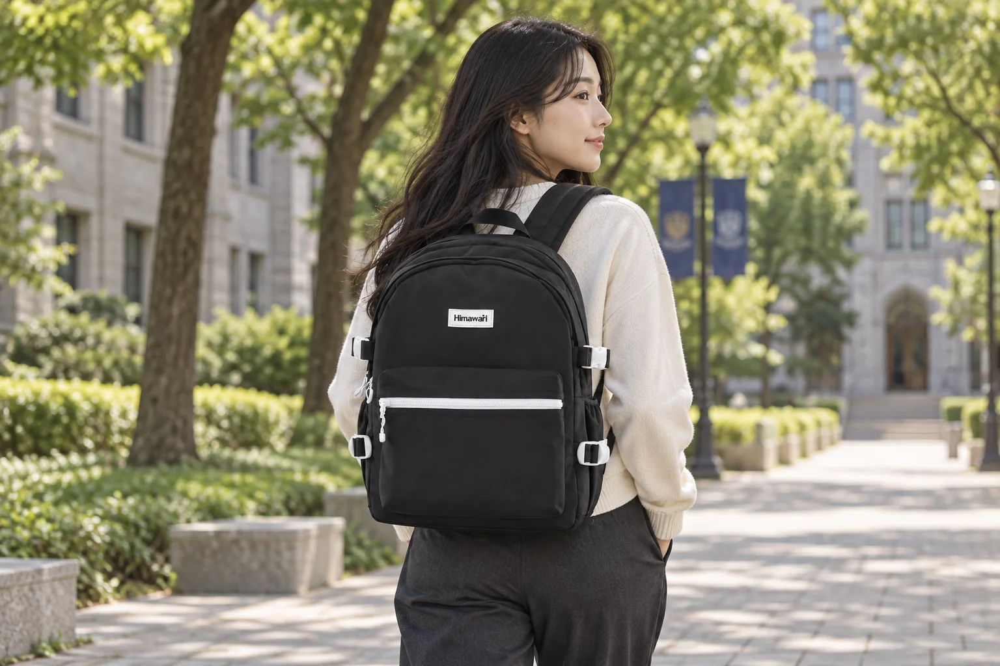

대학 강의실을 옮겨 다니는 날: 백팩 속 자리도 시간표대로

오전 수업은 강의실, 다음 수업은 다른 건물, 그 사이에는 도서관에서 과제를 하는 날이 있습니다. 한 공간에 짐을 풀고 하루를 보내는 방식으로 가방을 꾸리면 이동할 때마다 같은 물건을 다시 찾아야 합니다. 대학 캠퍼스에서는 시간표를 따라 필요한 자료가 바뀌므로, 가방의 자리를 과목별 목록보다 실제 꺼내는 순서에 맞추는 편이 편리합니다. 오늘 일정에서 들를 건물과 공강 시간을 먼저 떠올려 보세요.
시간표 위에 들를 장소를 순서대로 씁니다
수업 이름만 적지 말고 강의실, 이동할 건물, 공강에 머물 장소를 함께 적어보세요. 종이 자료가 필요한 수업, 노트북만 쓰는 수업, 별도 도구가 필요한 수업의 짐을 구분합니다. 학교가 공지한 준비물과 실제 강의 방식을 기준으로 담고, 필요할지 모른다는 이유로 지난주 자료를 모두 넣지 않습니다. 오전에만 필요한 종이를 오후 수업 자료 아래에 넣어두면 강의실 문 앞에서 가방을 한참 뒤적이게 됩니다.
첫 수업 자료는 입구 가까운 곳에
첫 수업에서 꺼낼 노트나 출력물을 찾기 쉬운 자리에 두고, 뒤에 쓸 자료는 납작하게 묶어 보관합니다. 종이를 구기지 않으려면 파일이나 얇은 케이스를 써서 모서리를 받치세요. 펜을 꺼내려고 메인 공간 전체를 열지 않도록 자주 쓰는 필기구는 닫히는 한곳에 둡니다. 다만 이동 중 쉽게 빠질 수 있는 열린 포켓은 피하고, 강의실 입실 전에 지퍼와 버클이 닫혔는지 확인합니다.
공강은 책상을 차리는 시간이 아닐 수도 있습니다
공강 시간이 짧다면 큰 노트북과 모든 교재를 펼치기보다 그 시간에 마칠 수 있는 작업 하나를 고릅니다. 이동할 건물이 멀거나 다음 수업까지 시간이 얼마 남지 않았다면 책상에 둔 충전기와 필통을 회수하는 시간도 계산하세요. 도서관이나 라운지의 사용 규칙에 따라 가방을 두고, 자리를 떠날 때 가방만 가져가고 콘센트에 꽂힌 어댑터를 남기지 않도록 작업 도구를 한곳에 모아둡니다.
강의실을 나설 때 10초만 되돌아봅니다
수업 끝나자마자 다음 건물로 이동할 때는 책상 위·의자 옆·콘센트 주변을 짧게 확인하세요. 사용한 자료는 가방 속 정해둔 칸으로 돌려놓고, 다음 수업 자료가 위로 오도록 바꿉니다. 이동 중 휴대전화를 보며 가방을 열린 채 메지 않도록 출입문 앞에서 지퍼를 닫습니다. 다른 학생과 줄지어 움직이는 좁은 복도에서는 가방이 주변 사람과 부딪히지 않게 부피와 끈 위치를 살피세요.
캠퍼스용 백팩은 실제 하루 짐으로 확인하세요
대표 사진은 실제 Himawari No.9290 블랙을 참조해 캠퍼스에서 사람이 멘 AI 착용 연출 컷입니다. 고객의 실측 착용 사진이나 특정 기기 수납 보증이 아닙니다. 백팩을 고를 때는 정면 사진보다 평소 들고 다니는 노트북·파일의 실제 치수와 가방 입구, 어깨끈 착용감을 함께 확인하세요. 오늘 시간표에 필요한 짐을 넣어 메어보면 비어 있는 상태에서 보던 크기와 다른 점을 알 수 있습니다.
참고·안내
- Himawari No.9290 제품 정보
- 실제 Himawari No.9290 블랙 제품 사진을 참조한 AI 착용 연출 이미지입니다. 실제 고객 후기나 실측 착용 사진이 아니며 기기 수납 가능 여부를 나타내지 않습니다.
자주 묻는 질문
강의가 많은 날 교재를 모두 들고 다녀야 하나요?
각 수업의 안내와 실제 사용 계획을 확인하세요. 필요하지 않은 지난 자료까지 넣기보다 그날 쓸 자료를 순서대로 준비하는 편이 좋습니다.
공강 때 가방을 자리에 두고 나가도 되나요?
시설의 이용 규칙을 따르고 귀중품을 챙기세요. 빈 자리에 가방을 둔 것만으로 물건의 안전이 보장되지는 않습니다.